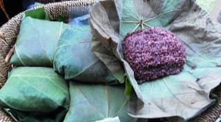

Linopot(Wraped Rice)

Ingredients
- Rice(Huma Rice or Normal Rice) (Measurement of rice according to personal preference)
- Cassava or Purple/White Sweet Potato or Sweet Pumpkin (Option according to individual taste)
- Salt
- Sufficient Water (To Cook Rice)
- Banana Leaf or Tarap Leaf or Tampu Leaf.
Steps
- Clean the sweet potato and thinly slice it, drain the water and set aside.
- Clean and wash the rice.
- Add sweet potato slices and cook together with rice like normal rice.
- Put a pinch - two of salt as seasoning.
- After the rice is cooked, mix the rice with a wooden spoon and mash the yams.
- Wash and clean the leaves, then wipe dry
- Place the rice on the leaves and wrap and Linopot rice is ready to be served.